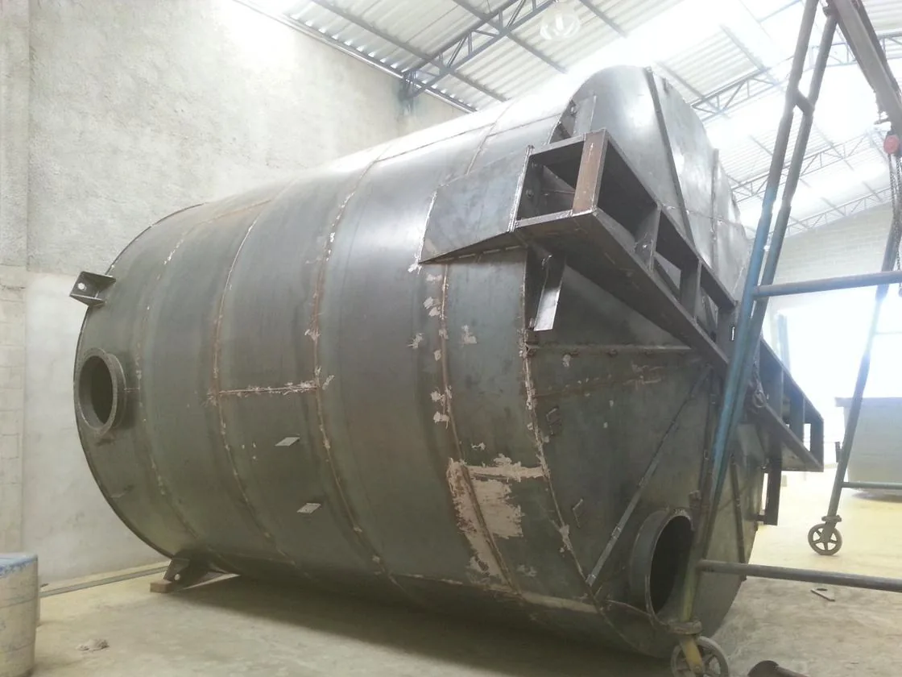
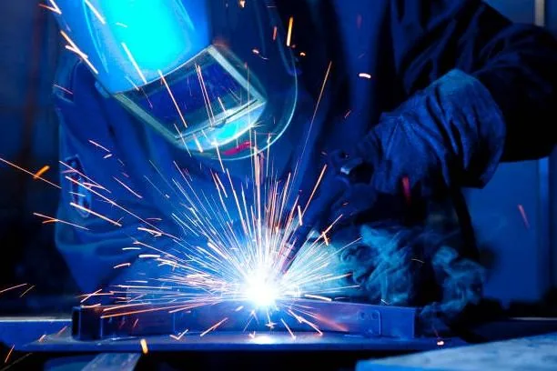
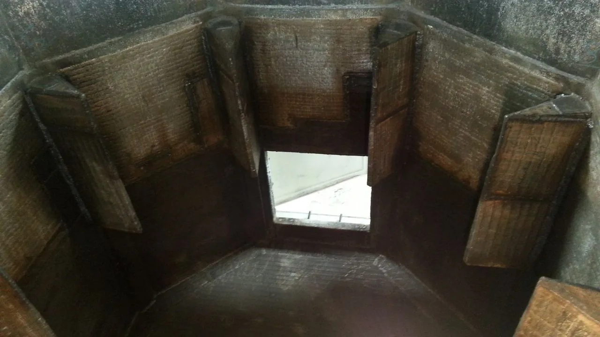
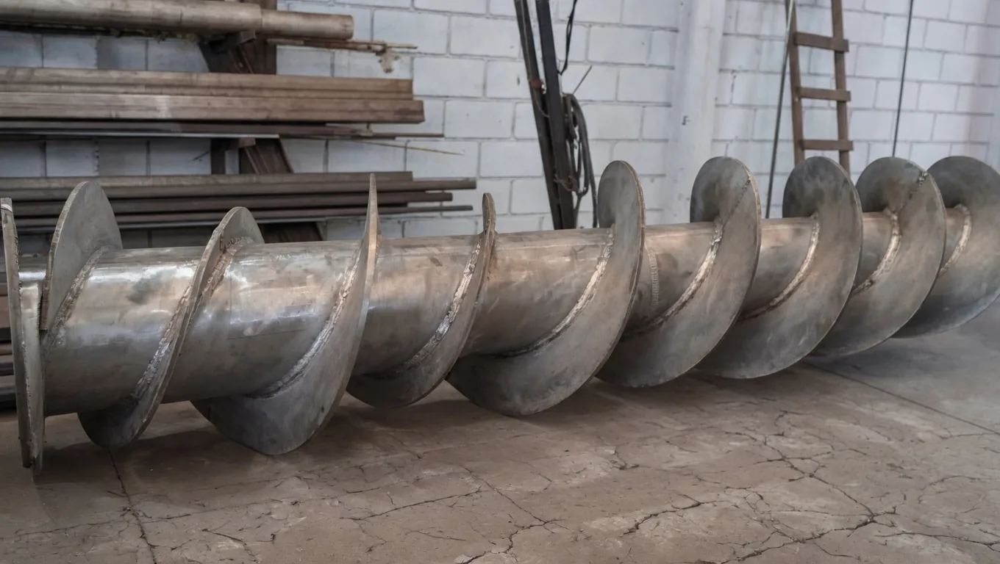
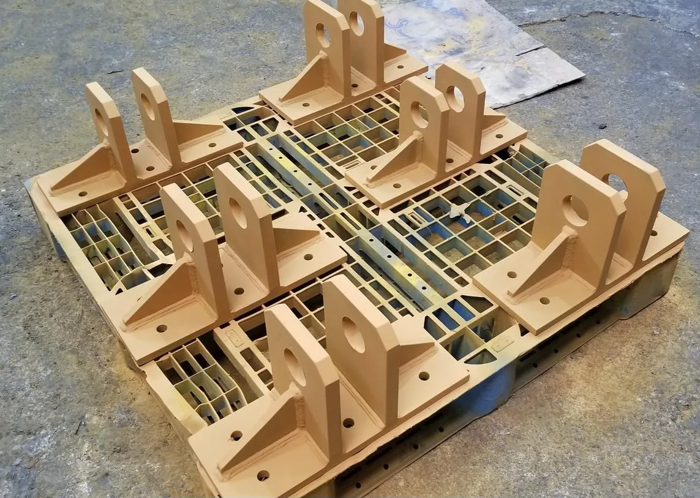
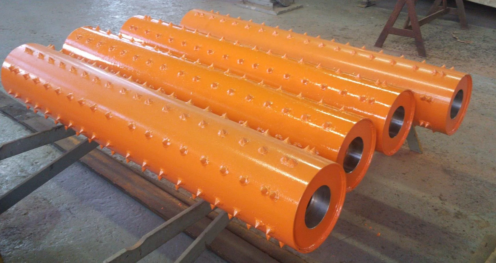
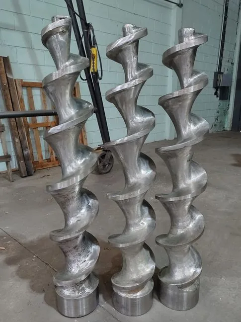
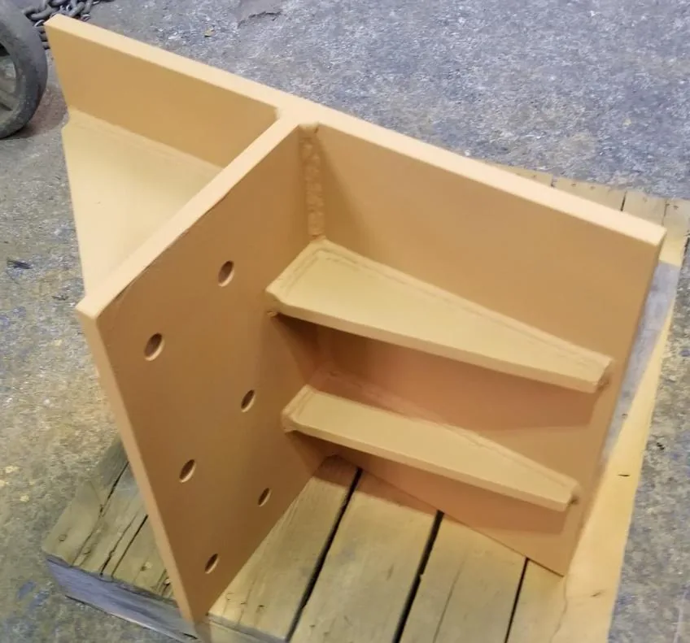
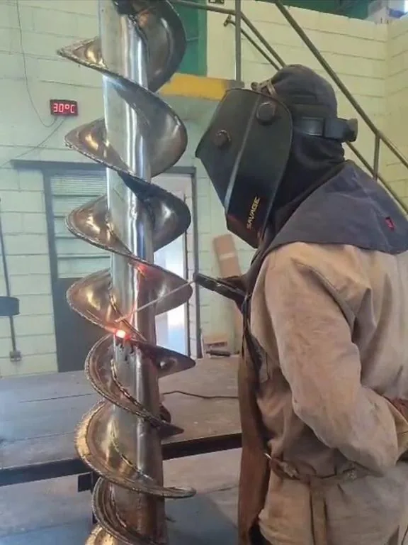
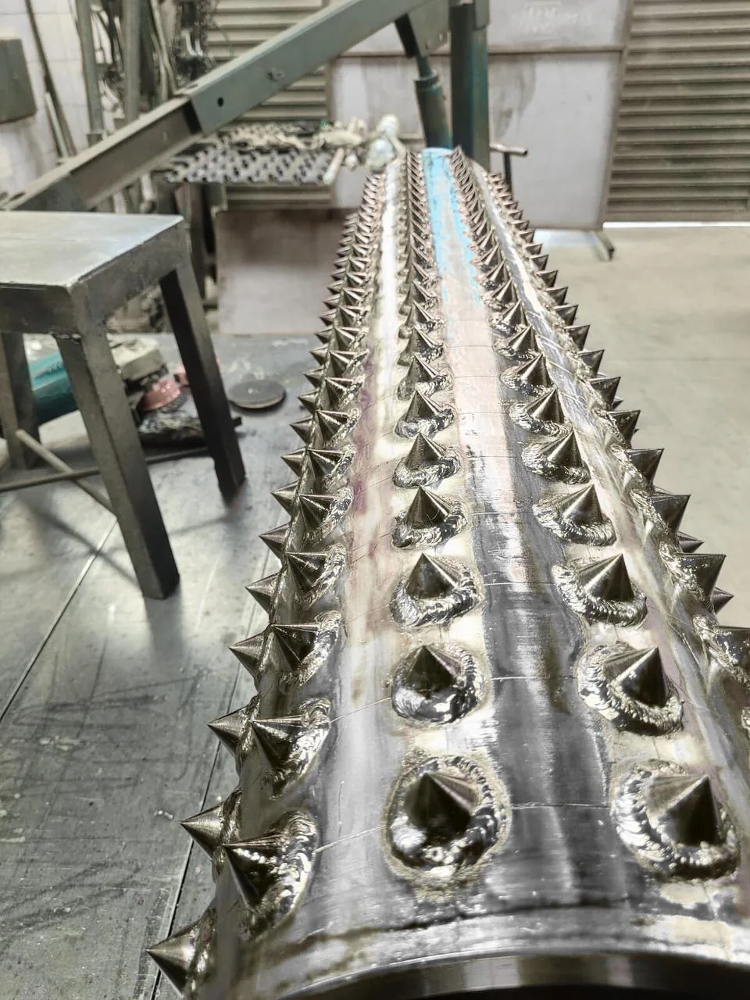

Solda TIG
Processo de alta precisão, ideal para aço inoxidável, alumínio e materiais nobres que exigem acabamento limpo e estético.
- Acabamento premium
- Cordão uniforme
- Indicado para inox e alumínio
Na CRM Caldeiraria, transformamos desenhos técnicos em soluções metálicas robustas. Trabalhamos com soldas especiais, revestimentos duros e fabricação sob medida em aço carbono, inox e ligas — atendendo segmentos que exigem precisão e durabilidade.


Cada peça é tratada como crítica. Cada solda, como definitiva.
A CRM Caldeiraria e Revestimentos Metálicos nasceu com o propósito de oferecer ao mercado industrial um serviço de caldeiraria de alta confiança técnica. Trabalhamos lado a lado com nossos clientes — interpretando desenhos, projetos e necessidades operacionais — para entregar peças, estruturas e equipamentos que resistem à rotina pesada das fábricas brasileiras.
Atuamos com processos consagrados de solda — TIG, MIG/MAG e eletrodo revestido — combinados a revestimentos especiais que prolongam a vida útil de equipamentos sujeitos a desgaste severo, como moinhos e componentes de máquinas. Nossa equipe é formada por profissionais experientes, comprometidos com prazos, especificações técnicas e acabamento.
Trabalhamos com os principais processos de solda da indústria, cada um aplicado conforme o material, espessura e exigência técnica do projeto.
Processo de alta precisão, ideal para aço inoxidável, alumínio e materiais nobres que exigem acabamento limpo e estético.
Produtividade e versatilidade para estruturas, tanques e peças em aço carbono e inox de espessuras médias a altas.
Robustez e confiabilidade para serviços de campo, manutenção pesada e estruturas que exigem solidez extrema.
Aplicação especializada para combater abrasão e impacto, prolongando a vida útil de moinhos e componentes críticos.
Soluções completas para indústrias de papel e celulose, MDF/MDP, química, petroquímica, alimentícia e demais segmentos industriais.
Tanques industriais sob medida, projetados conforme especificação técnica e demanda operacional do cliente.
Solicitar projeto →
Aplicação de revestimentos especiais em moinhos e componentes sujeitos a abrasão e desgaste extremo.
Solicitar projeto →
Fabricação completa de roscas transportadoras para movimentação de materiais em linhas industriais.
Solicitar projeto →
Bases de máquina, suportes, tubulações e estruturas metálicas fabricadas a partir do seu projeto técnico.
Solicitar projeto →
Rolinhos espinho e peças especiais para esteiras e linhas de transporte da indústria de celulose.
Solicitar projeto →
Processos TIG, MIG/MAG e eletrodo revestido aplicados em aço carbono, inox e ligas especiais.
Solicitar projeto →Cada projeto industrial pede um material específico. Por isso, dominamos uma variedade ampla de metais e ligas — sempre respeitando as exigências técnicas do seu desenho.
Estruturas pesadas, tanques e componentes industriais de uso geral.
Aplicações alimentícias, químicas e onde a resistência à corrosão é essencial.
Materiais nobres para aplicações críticas em alta temperatura ou abrasão extrema.
Eletrodos e arames específicos para revestimentos duros e antidesgaste.
Atendemos setores que exigem rigor técnico, prazos firmes e excelência de execução.
Componentes para linhas de transporte de eucalipto, esteiras e estruturas críticas.
Roscas de alimentação, tubulações e equipamentos sob desenho para o setor.
Tanques, reservatórios e estruturas resistentes em aço inox e ligas especiais.
Equipamentos em aço inox com acabamento sanitário e solda TIG de precisão.
Soluções customizadas para qualquer setor que exija caldeiraria especializada.
Um fluxo transparente, desde o primeiro contato até a entrega final do projeto.
Recebemos seu desenho, projeto ou demanda e realizamos uma análise completa de viabilidade técnica e produtiva.
Apresentamos uma proposta clara, com materiais, prazos e processos de solda adequados ao projeto.
Iniciamos a produção com equipe técnica especializada, seguindo rigorosamente o desenho e as especificações.
Cada peça passa por verificação de qualidade antes de seguir para entrega no destino combinado.
Trabalhos reais executados pela equipe da CRM Caldeiraria em diferentes segmentos industriais.




"Atendimento técnico de altíssimo nível. Entregaram exatamente o que pedimos no desenho, dentro do prazo combinado."
"O revestimento duro aplicado nos nossos moinhos aumentou consideravelmente a vida útil dos equipamentos. Recomendo."
"A equipe da CRM entende profundamente do que faz. Acabamento das soldas em inox foi impecável."
Sim. Trabalhamos com fabricação sob desenho, interpretando projetos enviados pelo cliente em formatos técnicos como PDF, DWG ou similares. Nossa equipe analisa a viabilidade antes de iniciar a produção.
Trabalhamos com TIG, MIG/MAG, eletrodo revestido e revestimentos especiais — sempre escolhendo o processo mais adequado ao material e à aplicação do projeto.
Sim. Atendemos clientes em todo o estado de São Paulo e também em outras regiões do país. A logística é combinada caso a caso conforme o porte do projeto.
Após o envio do desenho ou descrição da necessidade, nossa equipe analisa o escopo e retorna com uma proposta detalhada contendo materiais, processos, prazo e valor.
Sim. Realizamos fabricações em aço inox com solda TIG de alta precisão, atendendo padrões exigidos pelo setor alimentício.
Envie seu desenho, sua necessidade ou sua dúvida técnica. Nossa equipe responde com agilidade e atenção aos detalhes do seu projeto industrial.